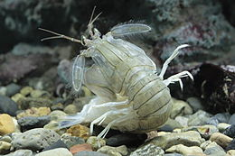
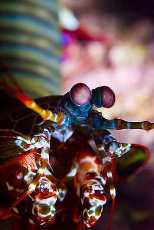

Fatos sobre o Stomatopoda

A Stomatopoda
Das coisas esquisitas na natureza, um animal chamado camarão mantis é conhecido por espancar a presa antes do abate. Trata-se, proporcionalmente, do golpe mais poderoso do reino animal. Agora, cientistas desvendaram o funcionamento desse soco digno de José Aldo. O camarão mantis é um crustáceo estomatópode, também conhecido como tamarutaca, lacraia-do-mar, lagosta-boxeadora ou camarão-louva-a-deus-palhaço. Dentre 400 espécies, o ‘Odontodactylus scyllarus’ é o que desfere um golpe mais violento: seu soco chega a 80 quilômetros por hora, aceleração semelhante a uma arma calibre .22.
Com uma pressão resultante de 60 quilos por centímetro quadrado, o bicho consegue facilmente quebrar a carapaça de um caranguejo – ou até mesmo o vidro de um aquário, em alguns casos. Há espécies de tamarutacas no litoral brasileiro. Mas o Odontodactylus scyllarus habita a região do Indo-Pacífico, de Guam até a África Oriental.
Classificação científica
| Reino | Animalia |
| Filo | Arthropoda |
| Subfilo | Crustacea |
| Classe | Malacostraca |
| Subclasse | Hoplocarida |
| Ordem | Stomatopoda |
Habitação
Eles vivem em fundo consolidado, lodoso ou ainda arenoso, onde cavam seus buracos ou aproveitam-se dos orifícios deixados por outros animais para neles se instalar.
Alimentação
Algumas espécies adotam a técnica da estreita para caçar, sem abandonar sua toca ou o buraco que cavam na areia. Esperam a presa chegar perto e a apanham com um golpe rápido das patas pinçadoras. outras espécies caçam nadando. São animais exclusivamente carnívoros, alimentando-se de camarões, caranguejos, moluscos, peixes e até mesmo outros da mesma ordem.

Anatomia
Possuem um par de patas enormes, usado para ataque e defesa O segundo par de patas, muito desenvolvido, é usado tanto para atacar a presa como para se defender. Além das patas, elas apresentam uma silhueta característica, devido ao grande comprimento aparentemente de seu abdómen.

Visão
Esses animais possuem o mais complexo sistema de visão de cores do mundo animal, porque eles podem ver 16 cores primárias, por possuírem 16 pigmentos diferentes em sua retina. Nossos olhos possuem três tipos desses receptores - que respondem à luz azul, verde e vermelha -, que nos permitem perceber o espectro de cores que vemos. Os cães contam com apenas dois tipos de cones (verde e azul), e é por isso que eles vêm tons de azul, verde e um pouco de amarelo.

Reprodução
A fêmea desova no local onde se abriga e, em caso de perigo, enrola os ovos como uma bola, prendendo-os junto ao corpo até encontrar um abrigo mais protegido. esses ovos ficam ligados por uma massa gelatinosa que a mãe carrega contra o ventre até que eclodem, limpando-os sem parar.
Pesquisa
Em artigo publicado na última semana no jornal iScience, pesquisadores explicam o que acontece no organismo desse crustáceo e como funciona seus apêndices que, tais e quais porretes, são capazes do mais poderoso golpe do reino animal. Em linhas gerais, a pesquisa demonstrou que o golpe do camarão funciona graças a uma estrutura que armazena e libera energia. São duas camadas feitas de diferentes materiais. “Trata-se essencialmente de uma estrutura de duas camadas: uma superior, feita de biocerâmica (carbonato de cálcio amorfo), e uma inferior, de biopolímero (quitina e proteínas)”, explicou ao UOL o pesquisador Ali Miserez, professor da Universidade de Tecnologia de Nan.

Histórico e aplicação
O pesquisador diz que houve trabalhos de outros cientistas utilizando câmeras de alta velocidade e sensores de força para medir o impacto do soco do camarão mantis. “Esses dados mostraram a força que tais animais conseguem geral com seus apêndices porretes”, afirma. “Em nossa pesquisa, investigamos a estrutura e as propriedades micromecânicas desse organismo. Mostramos como ele consegue gerar forças tão altas sem se fraturar.” De acordo com o cientista, se a estrutura fosse feita de um material homogêneo, certamente se quebraria. A pesquisa concluiu que “a natureza desenvolveu um design muito eficiente”, no caso da maneira como este camarão utiliza seu próprio organismo para caçar suas presas – tamarutacas são animais exclusivamente carnívoros: alimenta-se de camarões menores, caranguejos, moluscos e peixes. O estudo do camarão mantis pode nortear o desenvolvimento de estruturas artificiais em impressoras 3D e utilizá-las em microrrobótica, por exemplo. “Se você puder comprimir essas estruturas, elas serão muito fortes”, diz Miserez.
